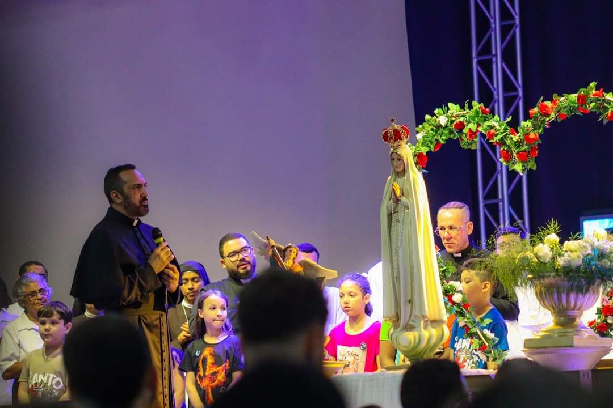
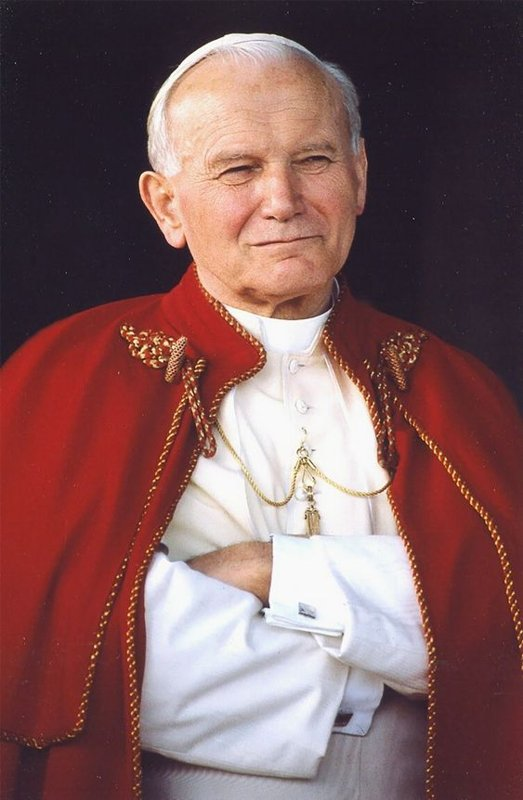
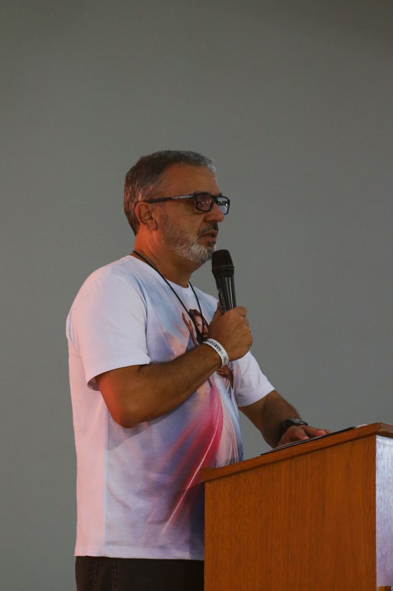
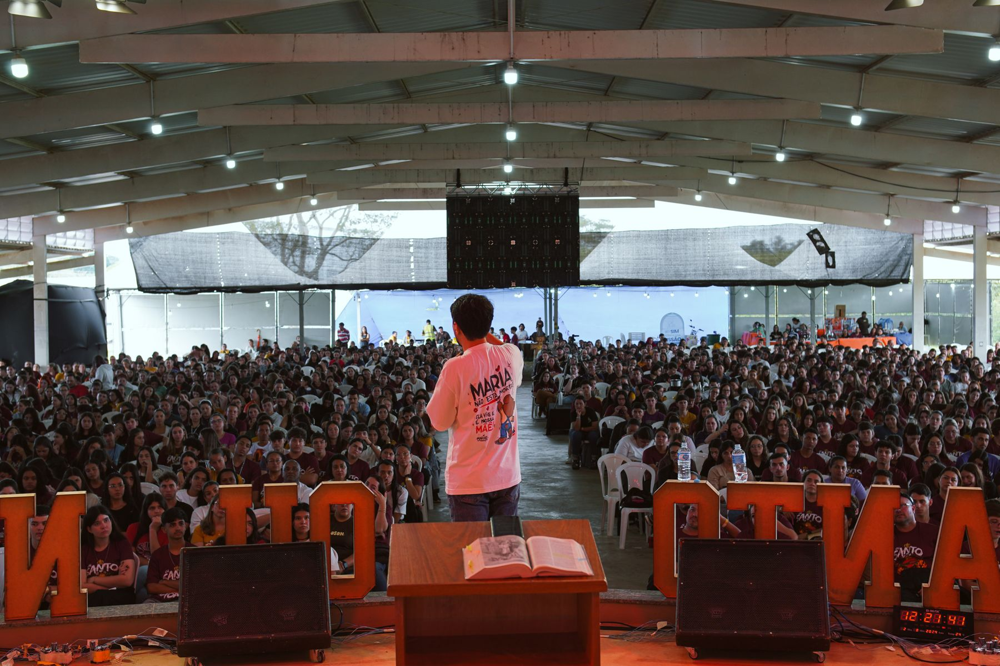

Comunidade SIM
IRMÃOS DA MISERICÓRDIA
 Jesus, eu confio em vós!
Jesus, eu confio em vós!
Nossos eventos
Kairós · o tempo da graça
Dracena-SP · 8h

Evangelizashow
Sábado · 19h30
 EM BREVE
EM BREVERetiros da Comunidade
Toque para ser avisado
22 de novembroDomingo · a partir das 8h
Dracena-SPLocal informado na inscrição
Sobre
Kairós é o tempo de Deus, o momento certo em que a graça entra na nossa história. Um dia inteiro de pregação, louvor e Santa Missa no Ano Jubilar dos 30 anos da comunidade.
Santo Inácio de Antioquia
Bispo e mártir · séc. II
Leitura do dia
O texto completo da leitura aparece aqui, atualizado automaticamente todos os dias…
Refrão do salmo
O salmo do dia com o refrão destacado para rezar junto…
Evangelho do dia
O Evangelho do dia e, logo abaixo, uma meditação curta da Comunidade SIM.
Minhas orações
1ª LeituraSalmoEvangelho
Rezar agora
Terço da Misericórdia
Áudio guiado · 15 min
Santo Terço
Mistérios do diaNovena a Santa Faustina
Apóstola da Misericórdia
Oração a São João Paulo II
Papa das Famílias e dos Jovens
Orações do dia a dia
Manhã, refeições e noiteLembrete no celularAvisar 5 minutos antes
Proteger este horárioAvisa se marcar um compromisso por cima
Nossos cursos

Diga SIM
a Deus

Santificai-vos
Exclusivos para sócios
Ver área
Escola de pregadores
8 aulas · em vídeoRetiro online do Ano Jubilar
5 encontrosDiga SIM a Deus
Semana 5 · 1ª etapa
Escola de pregadores é exclusivo para sócios
Seja sócio da Comunidade SIM para liberar este e todos os cursos da Área do Sócio.
- Todos os cursos exclusivos liberados
- Revista mensal no aplicativo
- Carteira de sócio digital
- Você ajuda a evangelização a chegar mais longe
Formação
Eucaristia: Jesus vivo no meio de nós
O sacramento do amor que alimenta a nossa fé.
Amizade
Amigos que caminham juntos para o céuAlegria, um dom de Deus
A alegria de quem encontrou JesusFamília restaurada pelo amor de Deus
Quando Deus entra na casaComo ser um bom pregador
Preparar o coração e a Palavra
Cursos liberados
TodosEscola de pregadores
Aula 2 de 8Retiro online do Ano Jubilar
5 encontrosRevista do mês

Revista SIMEdição do Ano Jubilar
Só para sócios
Ler agora